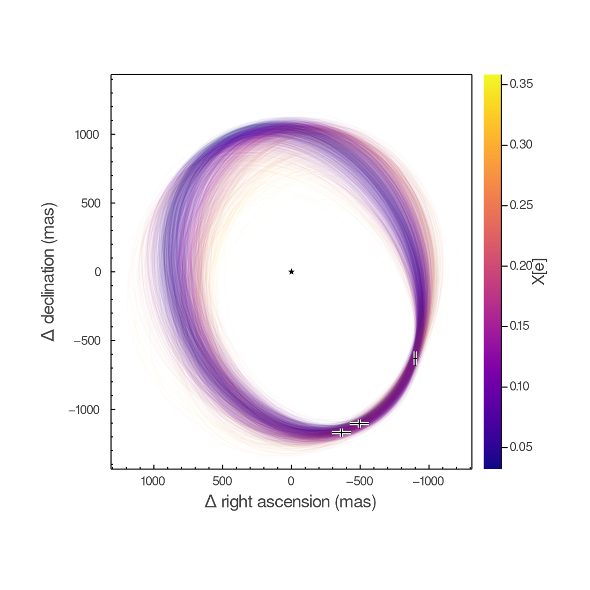

Fitting Astrometry
Here is a worked example of a basic model. It contains a star with a single planet, and several astrometry points.
The full code is available on GitHub
Start by loading the DirectDetections and Plots packages:
using DirectDetections, Distributions, PlotsCreating a planet
Create our first planet. Let's name it planet X.
@named X = Planet(
Priors(
a = Normal(1, 0.5),
e = TruncatedNormal(0.0, 0.2, 0, 1.0),
τ = Normal(0.5, 1),
ω = Normal(deg2rad(250.), deg2rad(80.)),
i = Normal(deg2rad(20.), deg2rad(10.)),
Ω = Normal(deg2rad(200.), deg2rad(30.)),
),
Astrometry(
(epoch=5000., ra=-364., dec=-1169., σ_ra=70., σ_dec=30.),
(epoch=5014., ra=-493., dec=-1104., σ_ra=70., σ_dec=30.),
(epoch=5072., ra=-899., dec=-629., σ_ra=10., σ_dec=50.),
)
)There's a lot going on here, so let's break it down.
The Priors block accepts the priors that you would like for the orbital parameters of this planet. Priors can be any univariate distribution from the Distributions.jl package. You will want to always specify the following parameters:
a: Semi-major axis, astronomical units (AU)i: Inclination, radiuse: Eccentricity in the range [0, 1)τ: Epoch of periastron passage, in fraction of orbit [0,1] (periodic outside these bounds)ω: Argument of periastron, radiusΩ: Longitude of the ascending node, radians.
The parameter τ represents the epoch of periastron passage as a fraction of the planet's orbit between 0 and 1. This follows the same convention as Orbitize! and you can read more about their choice in ther FAQ.
The parameters can be specified in any order.
The Astrometry block is optional. This is where you can list the position of a planet at different epochs if it known. epoch is a modified Julian date that the observation was taken. the ra, dec, σ_ra, and σ_dec parameters are the position of the planet at that epoch, relative to the star. All values in milliarcseconds (mas).
Creating a system
A system represents a host star with one or more planets. Properties of the whole system are specified here, like parallax distance and mass of the star. This is also where you will supply data like images and astrometric acceleration in later tutorials, since those don't belong to any planet in particular.
@named HD82134 = System(
Priors(
μ = Normal(1.0, 0.01),
plx =Normal(1000.2, 0.02),
),
X,
)The Priors block works just like it does for planets. Here, the two parameters you must provide are:
μ: Gravitational parameter of the central body, expressed in units of Solar mass.plx: Distance to the system expressed in milliarcseconds of parallax.
After that, just list any planets that you want orbiting the star. Here, we pass planet X.
You can name the system and planets whatever you like. NB: the @named convenience macro just passes in the name as a keyword argument, e.g. name=:HD82134. This makes sure that the variable name matches what gets displayed in the package output, and saved a few keystrokes. (taken from ModellingToolkit.jl)
Sampling
Great! Now we are ready to draw samples from the posterior.
Start sampling:
chain, stats = DirectDetections.hmc(
HD82134,
adaptation = 8_000,
iterations = 100_000,
tree_depth = 12,
);You will get an output that looks something like with a progress bar that updates every second or so:
┌ Info: Guessing a good starting location by sampling from priors
└ N = 100000
┌ Info: Found good location
│ mapv = -20.324754631163707
│ a =
│ 1-element Vector{Float64}:
└ 0.8654035807041643
Sampling100%|███████████████████████████████| Time: 0:03:43
iterations: 100000
n_steps: 127
is_accept: true
acceptance_rate: 0.7433785597405826
log_density: -22.227228640579845
hamiltonian_energy: 28.28412166672831
hamiltonian_energy_error: 0.4320257855228391
max_hamiltonian_energy_error: 0.864362638326071
tree_depth: 7
numerical_error: false
step_size: 0.016545736995705284
nom_step_size: 0.016545736995705284
is_adapt: false
mass_matrix: DenseEuclideanMetric(diag=[0.00010561557446916532, 0. ...])The sampler will begin by drawing orbits randomly from the priors (100,000 by default). It will then pick the orbit with the highest posterior density as a starting point for HMC adaptation. This recipe is a good way to find a point somewhat close to the typical set. Starting at the global maximum on the other hand, has at times not led to good sampling.
For a basic model like this, sampling should take less than a minute on a typical laptop.
A few things to watch out for: check that you aren't getting many (any, really) numerical_error=true. This likely indicates that the priors are too restrictive, and the sampler keeps taking steps outside of their valid range. It could also indicate a problem with DirectDetections, e.g. if the sampler is picking negative eccentricities. You may see some warnings during initial step-size adaptation. These are probably nothing to worry about if sampling proceeds normally afterwards.
Diagnostics
The first thing you should do with your results is check a few diagnostics to make sure the sampler converged as intended.
You can check that the acceptance rate was reasonably high (0.4-0.95):
mean(getproperty.(stats, :acceptance_rate))Check the mean tree depth (5-9):
mean(getproperty.(stats, :tree_depth))Lower than this and the sampler is taking steps that are too large and encountering a U-turn very quicky. Much larger than 10 and it might be being too conservative. The default maximum tree depth is 16. It should not average anything close to this value, but occasional high values are okay.
Check the maximum tree depth reached (often 11-12, can be more):
maximum(getproperty.(stats, :tree_depth))You can make a trace plot:
plot(
chain["X[a]"],
xlabel="iteration",
ylabel="semi-major axis (aU)"
)
And an auto-correlation plot:
using StatsBase
plot(
autocor(chain["X[e]", 1:500),
xlabel="lag",
ylabel="autocorrelation",
)This plot shows that these samples are not correlated after only above 5 steps. No thinning is necessary.
It's recommened that you run multiple chains for more steps to verify the convergance of your final results.
Analysis
As a first pass, let's plot a sample of orbits drawn from the posterior.
using Plots
plotmodel(chain, HD82134)This function draws orbits from the posterior and displays them in a plot. Any astrometry points are overplotted. If other data like astrometric acceleration is provided, additional panels will appear. 
{kind=link}
Pair Plot
A very useful visualization of our results is a pair-plot, or corner plot. We can use our PairPlots.jl package for this purpose:
using Plots, PairPlots
using PairPlots
table = (;
a= chn["X[a]"],
e= chn["X[e]"],
i=rad2deg.(chn["X[i]"]),
Ω=rad2deg.(chn["X[Ω]"]),
ω=rad2deg.(chn["X[ω]"]),
τ= chn["X[τ]"],
)
labels=["a", "e", "i", "\\Omega", "\\omega", "\\tau"]
units = ["(au)", "", "(\\degree)", "(\\degree)", "(\\degree)", ""]
corner(table, labels, units)You can read more about the syntax for creating pair plots in the PairPlots.jl documentation page.  In this case, the sampler was able to resolve the complicated degeneracies between eccentricity, the longitude of the ascending node, and argument of periapsis.
In this case, the sampler was able to resolve the complicated degeneracies between eccentricity, the longitude of the ascending node, and argument of periapsis.
Notes on Hamiltonian Monte Carlo
Traditional Affine Invariant MCMC is supported (similar to the python emcee package), but it is recommended that you use Hamiltonian Monte Carlo. This sampling method makes use of derivative information, and is much more efficient. This package by default uses the No U-Turn sampler, as implemented in AdvancedHMC.jl.
Derviatives for a complex model are usualy tedious to code, but DirectDetections uses ForwardDiff.jl to generate them automatically.
When using HMC, only a few chains are necessary. This is in contrast to Affine Invariant MCMC based packages where hundreds or thousands of walkers are required. One chain should be enough to cover the whole posterior, but you can run a few different chains to make sure each has converged to the same distribution.
Similarily, many fewer samples are required. This is because unlike Affine Invariant MCMC, HMC produces samples that are much less correlated after each step (i.e. the autocorrelation time is much shorter).